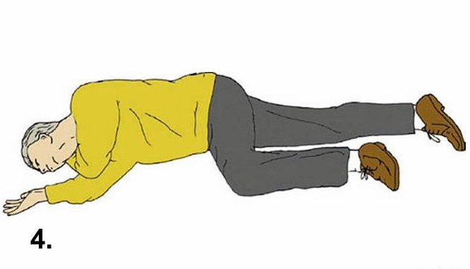
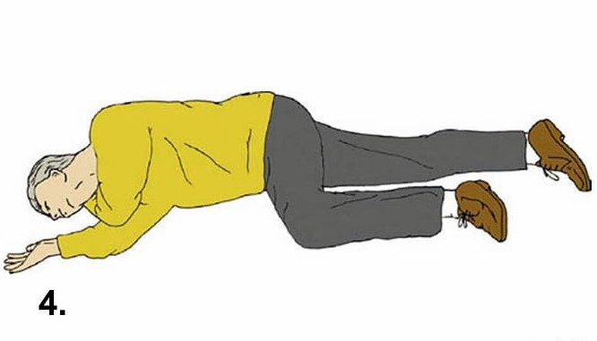

Stabil oldalfekvés
(Felnőtt)
Kattints bármelyik lépésre a részletes útmutató megtekintéséhez
A stabil oldalfektetés megfelelő nyújtása életeket menthet.
Stabil oldalfektetés előtt ellenőrizzük, hogy van –e szabad légút, és stabil légzés.
Ha van, akkor ellenőrizzük a koponyát, a mellkast, a csigolyákat és a
medencét/combcsontot, hogy nincsenek eltörve.
Ezt óvatos nyomásokkal tudjuk ellenőrizni. Továbbá figyelni kell a
hasi sérülések nyomait is.
- Koponyaalapi törés esetén észlelhetünk a fülből szivárgó folyadékot, mely tiszta vér vagy véres folyadék is lehet.
- Törött bordáknál (ablakos törés) a bordakosár könnyebben összenyomható lesz, a combcsont, ha törve van, akkor recsegő hangot hallani.
- Ha csigolya tört, akkor szintén recsegő hang kíséretében a csigolya benyomhatóvá válik.
- A nyílt hasi sérülések láthatóak, ha nem látszik semmi, óvatos betapintással ellenőrizhetjük, hogy a beteg hasa nem keményedett meg az esetleges belső vérzés miatt.
- Óvatosan nyomjuk! Ha bármelyiket a fentiekből tapasztaljuk a beteget szigorúan TILOS stabil oldalfektetésbe tenni.
Stabil Oldalfektetés
1
Első lépés
Fordítsa a beteget hanyatt, nyújtsa ki mindkét lábát! Térdeljen az
áldozat mellé, majd az Önhöz közelebb eső kezét helyezze a testre
merőlegesen kifelé, a könyököt hajlítsa be, a tenyér felfelé
nézzen!

2
Második lépés
A másik keze keresztben a mellkason, a kézhát érjen az arcához! A
tenyerét tartsa itt az átfordítás alatt!

3
Harmadik lépés
Szabad kezével a távolabbi lábát térdnél behajlítva húzza fel úgy,
hogy a talp a talajra feküdjön! Az egyik keze maradjon az arcánál,
a másik kezével a térdénél (combjánál) fogva óvatosan fordítsa át!

4
Negyedik lépés
Átfordítás után: A lábakat helyezze el a képen látható módon, azaz
felül lévő végtag csípőízületnél és térdnél is derékszögben legyen
behajlítva. Az arc alatti tenyeret igazítsa úgy, hogy a fej kissé
hátra és kissé lefelé legyen! A beteget lehetőleg ne hagyja
magára, ellenőrizd továbbra is folyamatosan a légzését!

